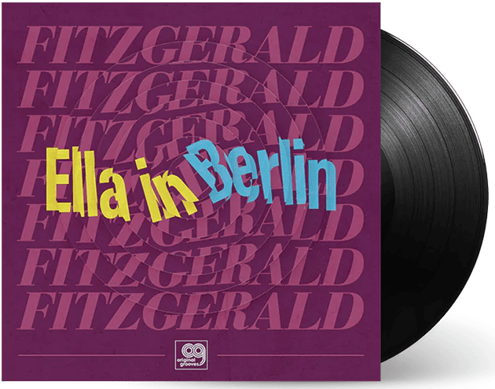

| 이름 | Ella Fitzgerald (엘라 피츠제럴드) |
|---|---|
| 출생 | 1917년 4월 25일 미국 버지니아주 뉴포트 뉴스 |
| 사망 | 1996년 6월 14일(79세) |
| 활동 시기 | 1934~1993년 |
| 악기 | 보컬 |
엘라 제인 피츠제럴드(영어: Ella Jane Fitzgerald, 1917년 4월 25일 ~ 1996년 6월 14일)는 미국의 재즈 가수, 배우이다. 3옥타브를 넘나드는
가창력과 함께 '재즈의 여왕'이라는 별명을 갖고 있다. 가수로 활동하는 59년 동안 13차례의 그래미상, 로널드 레이건 대통령에게 '자유의 메달',
조지 H. W. 부시 대통령에게 국립 예술 훈장을 수여받았다.
11935년부터 치크 웹 오케스트라에서 일하였고, 1940년대에는 자신의 솔로 카바레 활동을 창시하였다.
1950년대에 그녀에게 노래를 부르는 데 이상적인 재즈 악기 후원과 함께 더 나은 물질을 주었던 재즈 흥행자 노먼 그란즈를 자신의 매니저로 획득하였을 때 그녀의 지위가 극적으로 올랐다. 수많은 세월 동안 필하모닉에서 그란드의 재즈에 인기를 끌어들이면서 피츠제럴드는 사상 최고 판매 보컬 녹음 예술인들 중의 하나였다. 1956년부터 1967년까지 리처드 로저스, 콜 포터, 조지 거슈윈, 듀크 엘링턴, 제롬 컨, 어빙 벌린과 자니 머서가 작곡한 거의 250개의 현저한 노래들을 연출한 19편의 가요집을 녹음하였다.
트럼펫이나 색소폰이 넌센스적인 음절들을 이용하면서 즉홍한 피츠제럴드의 스캣 성악 전문적 기술은 남성과 여성 양 부분의 재즈 보컬리스트들에 의하여 넓게 모방되었다. "Mack the Knife:Ella in Berlin"같은 그녀의 최대 자극적 녹음 상연들은 근대 재즈 호른 연주자가 스캣으로 연출하는 기능과 상상력을 지니었다.
그녀의 저작 목록으로는 "엘라 피츠제럴드"(스튜어트 니콜슨 저작, 1993)와 "노래의 영부인"(제프리 마크 피델만, 1994)이 있다. 1993년에는 당뇨병으로 인하여 양쪽 다리부터 무릎 아래까지를 절단하는 수술을 받았다. 1996년 6월 15일 캘리포니아주 베벌리 힐스에서 사망하였다.
11935년부터 치크 웹 오케스트라에서 일하였고, 1940년대에는 자신의 솔로 카바레 활동을 창시하였다.
1950년대에 그녀에게 노래를 부르는 데 이상적인 재즈 악기 후원과 함께 더 나은 물질을 주었던 재즈 흥행자 노먼 그란즈를 자신의 매니저로 획득하였을 때 그녀의 지위가 극적으로 올랐다. 수많은 세월 동안 필하모닉에서 그란드의 재즈에 인기를 끌어들이면서 피츠제럴드는 사상 최고 판매 보컬 녹음 예술인들 중의 하나였다. 1956년부터 1967년까지 리처드 로저스, 콜 포터, 조지 거슈윈, 듀크 엘링턴, 제롬 컨, 어빙 벌린과 자니 머서가 작곡한 거의 250개의 현저한 노래들을 연출한 19편의 가요집을 녹음하였다.
트럼펫이나 색소폰이 넌센스적인 음절들을 이용하면서 즉홍한 피츠제럴드의 스캣 성악 전문적 기술은 남성과 여성 양 부분의 재즈 보컬리스트들에 의하여 넓게 모방되었다. "Mack the Knife:Ella in Berlin"같은 그녀의 최대 자극적 녹음 상연들은 근대 재즈 호른 연주자가 스캣으로 연출하는 기능과 상상력을 지니었다.
그녀의 저작 목록으로는 "엘라 피츠제럴드"(스튜어트 니콜슨 저작, 1993)와 "노래의 영부인"(제프리 마크 피델만, 1994)이 있다. 1993년에는 당뇨병으로 인하여 양쪽 다리부터 무릎 아래까지를 절단하는 수술을 받았다. 1996년 6월 15일 캘리포니아주 베벌리 힐스에서 사망하였다.
